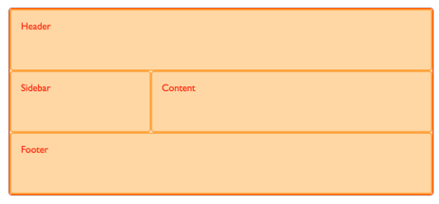
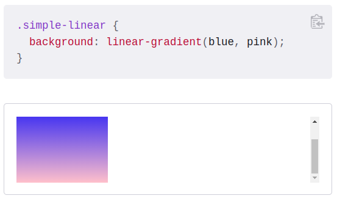
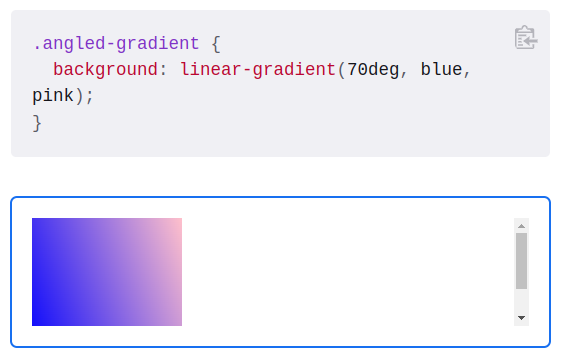

CSS - Cascading Style Sheets
Cascading Style Sheets (CSS) is a stylesheet language used to describe the presentation of a document written in HTML or XML (including XML dialects such as SVG, MathML or XHTML). CSS describes how elements should be rendered on screen, on paper, in speech, or on other media.
CSS is among the core languages of the open web and is standardized across Web browsers according to W3C specifications. Previously, development of various parts of CSS specification was done synchronously, which allowed versioning of the latest recommendations. You might have heard about CSS1, CSS2.1, CSS3. However, CSS4 has never become an official version.
From CSS3, the scope of the specification increased significantly and the progress on different CSS modules started to differ so much, that it became more effective to develop and release recommendations separately per module. Instead of versioning the CSS specification, W3C now periodically takes a snapshot of the latest stable state of the CSS specification
CSS (Cascading Style Sheets) is used to style and layout web pages — for example, to alter the font, color, size, and spacing of your content, split it into multiple columns, or add animations and other decorative features. This module provides a gentle beginning to your path towards CSS mastery with the basics of how it works, what the syntax looks like, and how you can start using it to add styling to HTML.
CSS building blocks
This module carries on where CSS first steps left off — now you've gained familiarity with the language and its syntax, and got some basic experience with using it, it's time to dive a bit deeper. This module looks at the cascade and inheritance, all the selector types we have available, units, sizing, styling backgrounds and borders, debugging, and lots more.
The aim here is to provide you with a toolkit for writing competent CSS and help you understand all the essential theory, before moving on to more specific disciplines like text styling and CSS layout.
Styling text
With the basics of the CSS language covered, the next CSS topic for you to concentrate on is styling text — one of the most common things you'll do with CSS. Here we look at text styling fundamentals, including setting font, boldness, italics, line and letter spacing, drop shadows, and other text features. We round off the module by looking at applying custom fonts to your page, and styling lists and links.
CSS layout
At this point we've already looked at CSS fundamentals, how to style text, and how to style and manipulate the boxes that your content sits inside. Now it's time to look at how to place your boxes in the right place in relation to the viewport, and to each other. We have covered the necessary prerequisites so we can now dive deep into CSS layout, looking at different display settings, modern layout tools like flexbox, CSS grid, and positioning, and some of the legacy techniques you might still want to know about.
Properties
- accent-color
- align-content
- align-items
- align-self
- all
- animation-delay
- animation-duratioon
- animaiton-fill-mode
- animation-iteration-count
- animation-name
- animation-play-state
- animation-timeline
- animation-timing-function
- appearance
- aspect-ratio
- backdrop-fillter
- background-attachment
- background-image
- background-color
- background-repeat
- background-size
Attribute Selectors
The CSS attribute selector matches elements based on the presence or value of a given attribute.
[attr] Represents elements with an attribute name of attr. [attr=value] Represents elements with an attribute name of attr whose value is exactly value. [attr~=value] Represents elements with an attribute name of attr whose value is a whitespace-separated list of words, one of which is exactly value. [attr|=value] Represents elements with an attribute name of attr whose value can be exactly value or can begin with value immediately followed by a hyphen, - (U+002D). It is often used for language subcode matches. [attr^=value] Represents elements with an attribute name of attr whose value is prefixed (preceded) by value. [attr$=value] Represents elements with an attribute name of attr whose value is suffixed (followed) by value. [attr*=value] Represents elements with an attribute name of attr whose value contains at least one occurrence of value within the string. [attr operator value i] Adding an i (or I) before the closing bracket causes the value to be compared case-insensitively (for characters within the ASCII range). [attr operator value s] Adding an s (or S) before the closing bracket causes the value to be compared case-sensitively (for characters within the ASCII range).
Class selectors
The CSS class selector matches elements based on the contents of their class attribute.
ID selectors
The CSS ID selector matches an element based on the value of the element's id attribute. In order for the element to be selected, its id attribute must match exactly the value given in the selector.
At rules
- @counter-style
- @document
- @font-face
- @font-feature-values
- @import
- @keyframes
- @layer
- @media
- @namespace
- @property
- @viewport
Types
- color
- display-box
- Filter-function
- Using multiple backgrounds
- Resizing background images with background-size
- Introduction to the CSS basic box model
When laying out a document, the browser's rendering engine represents each element as a rectangular box according to the standard CSS basic box model. CSS determines the size, position, and properties (color, background, border size, etc.) of these boxes. Every box is composed of four parts (or areas), defined by their respective edges: the content edge, padding edge, border edge, and margin edge.
- Content area
- Padding area
- Border area
- Margin area
The content area, bounded by the content edge, contains the "real" content of the element, such as text, an image, or a video player. Its dimensions are the content width (or content-box width) and the content height (or content-box height). It often has a background color or background image. If the box-sizing property is set to content-box (default) and if the element is a block element, the content area's size can be explicitly defined with the width, min-width, max-width, height, min-height, and max-height properties.
The padding area, bounded by the padding edge, extends the content area to include the element's padding. Its dimensions are the padding-box width and the padding-box height. The thickness of the padding is determined by the padding-top, padding-right, padding-bottom, padding-left, and shorthand padding properties.
The border area, bounded by the border edge, extends the padding area to include the element's borders. Its dimensions are the border-box width and the border-box height. The thickness of the borders are determined by the border-width and shorthand border properties. If the box-sizing property is set to border-box, the border area's size can be explicitly defined with the width, min-width, max-width, height, min-height, and max-height properties. When there is a background (background-color or background-image) set on a box, it extends to the outer edge of the border (i.e. extends underneath the border in z-ordering). This default behavior can be altered with the background-clip css property.
The margin area, bounded by the margin edge, extends the border area to include an empty area used to separate the element from its neighbors. Its dimensions are the margin-box width and the margin-box height. The size of the margin area is determined by the margin-top, margin-right, margin-bottom, margin-left, and shorthand margin properties. When margin collapsing occurs, the margin area is not clearly defined since margins are shared between boxes. Finally, note that for non-replaced inline elements, the amount of space taken up (the contribution to the height of the line) is determined by the line-height property, even though the borders and padding are still displayed around the content.
- Mastering margin collapsing
The top and bottom margins of blocks are sometimes combined (collapsed) into a single margin whose size is the largest of the individual margins (or just one of them, if they are equal), a behavior known as margin collapsing. Note that the margins of floating and absolutely positioned elements never collapse. Margin collapsing occurs in three basic cases:
- Adjacent siblings
- No content separating parent and descendants
- Empty blocks
- More complex margin collapsing (of more than two margins) occurs when the above cases are combined.
- These rules apply even to margins that are zero, so the margin of a descendant ends up outside its parent (according to the rules above) whether or not the parent's margin is zero.
- When negative margins are involved, the size of the collapsed margin is the sum of the largest positive margin and the smallest (most negative) negative margin.
- When all margins are negative, the size of the collapsed margin is the smallest (most negative) margin. This applies to both adjacent elements and nested elements.
The margins of adjacent siblings are collapsed (except when the latter sibling needs to be cleared past floats).
If there is no border, padding, inline part, block formatting context created, or clearance to separate the margin-top of a block from the margin-top of one or more of its descendant blocks; or no border, padding, inline content, height, or min-height to separate the margin-bottom of a block from the margin-bottom of one or more of its descendant blocks, then those margins collapse. The collapsed margin ends up outside the parent.
If there is no border, padding, inline content, height, or min-height to separate a block's margin-top from its margin-bottom, then its top and bottom margins collapse. Some things to note:
Examples
- Basic concepts of Flexbox
- Comparison with other layout methods
- Aligning items in a flex container
- Ordering flex items
- Controlling flex items ratios
- Mastering wrapping of flex items
- Typical use cases of Flexbox
- Backwards compatibility of Flexbox
- OpenType font features guide
- Variable fonts guide
- Basics concepts of grid layout
- Relationship to other layout methods
- Line-based placement
- Grid template areas
- Layout using named grid lines
- Auto-placement in grid layout
- Box alignment in grid layout
- Grids, logical values and writting models
- Grid layout and accessibility
- Grid layout and progressive enhancement
- Realizing common layouts using grids
- Subgrid
- Masonry layout
- A basic linear gradient
- Changing the direction
- Diagonal gradients
- Using angles
- Declaring colors and creating effects
- Using CSS counters
CSS counters let you adjust the appearance of content based on its location in a document. For example, you can use counters to automatically number the headings in a webpage, or to change the numbering on ordered lists. Counters are, in essence, variables maintained by CSS whose values may be incremented or decremented by CSS rules that track how many times they're used. You can define your own named counters, and you can also manipulate the list-item counter that is created by default for all ordered lists.
- Using counters
- Manipulating a counter's value
- Displaying a counter
To use a counter it must first be initialized to a value with the counter-reset property. The counter's value can then be increased or decreased using counter-increment property. The current value of a counter is displayed using the counter() or counters() function, typically within a pseudo-element content property. Note that counters can only be set, reset, or incremented in elements that generate boxes. For example, if an element is set to display: none then any counter operation on that element will be ignored.
To use a CSS counter, it must first be initialized to a value with the counter-reset property. The property can also be used to change the counter value to any specific number. Below we initialize a counter named section to the default value (0).
You can also initialize multiple counters, optionally specifying an initial value for each. Below we initialize the section and topic counters to the default value, and the page counter to 3.
Once initialized, a counter's value can be increased or decreased using counter-increment. For example, the following declaration would increment the section counter by one on every h3 tag.
You can specify the value to increment or decrement the counter after the counter name, using a positive or negative number. The counter's name must not be none, inherit, or initial; otherwise the declaration is ignored.
The value of a counter can be displayed using either the counter() or counters() function in a content property. For example, the following declaration uses counter() to prefix each h3 heading with the text Section
:, where is the value of the count in decimal (the default display style): The counter() function is used when the numbering of nesting levels does not include the context of parent levels. For example, here each nested level restarts from one:
The counters() function is used when the count for nested levels must include the count from parent levels. For example, you might use this to lay out sections as shown:
The counter() function has two forms: counter(
) and counter( , ). The generated text is the value of the innermost counter of the given name in scope at the pseudo-element. The counters() function also has two forms: counters( , ) and counters( , , ). The generated text is the value of all counters with the given name in scope at the given pseudo-element, from outermost to innermost, separated by the specified string ( ). The counter is rendered in the specified for both methods (decimal by default). You can use any of the list-style-type values or your own custom styles. Examples showing the use of counter() and counter() are given below in the basic example and Example of a nested counter, respectively. - Consistent list indentation
Color keywords are case-insensitive identifiers that represent a specific color, such as red, blue, black, or lightseagreen. Although the names more or less describes their respective colors, they are essentially artificial, without a strict rationale behind the names used. There are a few caveats to consider when using color keywords: HTML only recognizes the 16 basic color keywords found in CSS1, using a specific algorithm to convert unrecognized values (often to completely different colors). The other color keywords should only be used in CSS and SVG. Unlike HTML, CSS will completely ignore unknown keywords. The color keywords all represent plain, solid colors, without transparency. Several keywords are aliases for each other: aqua / cyan fuchsia / magenta darkgray / darkgrey darkslategray / darkslategrey dimgray / dimgrey lightgray / lightgrey lightslategray / lightslategrey gray / grey slategray / slategrey Though many keywords have been adapted from X11, their RGB values may differ from the corresponding color on X11 systems since manufacturers sometimes tailor X11 colors to their specific hardware.
In this example the outer
The
Backgrounds and Borders
You can apply multiple backgrounds to elements. These are layered atop one another with the first background you provide on top and the last background listed in the back. Only the last background can include a background color. Specifying multiple backgrounds is easy:

You can do this with both the shorthand background property and the individual properties thereof except for background-color. That is, the following background properties can be specified as a list, one per background: background, background-attachment, background-clip, background-image, background-origin, background-position, background-repeat, background-size.
Example
In this example, three backgrounds are stacked: the Firefox logo, an image of bubbles, and a linear gradient:
Result
The background-size CSS property lets you resize the background image of an element, overriding the default behavior of tiling the image at its full size by specifying the width and/or height of the image. By doing so, you can scale the image upward or downward as desired.
Box model
Flexbox
The Flexible Box Module, usually referred to as flexbox, was designed as a one-dimensional layout model, and as a method that could offer space distribution between items in an interface and powerful alignment capabilities. This article gives an outline of the main features of flexbox, which we will be exploring in more detail in the rest of these guides. When we describe flexbox as being one dimensional we are describing the fact that flexbox deals with layout in one dimension at a time — either as a row or as a column. This can be contrasted with the two-dimensional model of CSS Grid Layout, which controls columns and rows together.
In this article we will take a look at how Flexbox fits in with all the other CSS modules. We'll find out which specifications you also need to take notice of if you want to learn flexbox, and find out why flexbox is different to some other modules.
One of the reasons that flexbox quickly caught the interest of web developers is that it brought proper alignment capabilities to the web for the first time. It enabled proper vertical alignment, so we can at last easily center a box. In this guide, we will take a thorough look at how the alignment and justification properties work in Flexbox. To center our box we use the align-items property to align our item on the cross axis, which in this case is the block axis running vertically. We use justify-content to align the item on the main axis, which in this case is the inline axis running horizontally.
New layout methods such as Flexbox and Grid bring with them the possibility of controlling the order of content. In this article, we will take a look at ways in which you can change the visual order of your content when using Flexbox. We will also consider the implications of reordering items from an accessibility point of view.
In this guide we will be exploring the three properties that are applied to flex items, which enable us to control the size and flexibility of the items along the main axis — flex-grow, flex-shrink, and flex-basis. Fully understanding how these properties work with growing and shrinking items is the real key to mastering flexbox.
The initial value of the flex-wrap property is nowrap. This means that if you have a set of flex items that are too wide for their container, they will overflow it. If you want to cause them to wrap once they become too wide you must add the flex-wrap property with a value of wrap, or use the shorthand flex-flow with values of row wrap or column wrap. Items will then wrap in the container. In the next example I have ten items all with a flex-basis of 160px and the ability to grow and shrink. Once the first row gets to a point where there is not enough space to place another 160 pixel item, a new flex line is created for the items and so on until all of the items are placed. As the items can grow, they will expand larger than 160 px in order to fill each row completely. If there is only one item on the final line it will stretch to fill the entire line.
In a perfect world of browser support, the reason you'd choose to use flexbox is because you want to lay a collection of items out in one direction or another. As you lay out your items you want to control the dimensions of the items in that one dimension, or control the spacing between items. These are the uses that flexbox was designed for. You can read more about the difference between flexbox and CSS Grid Layout in Relationship of Flexbox to other layout methods, where we discuss how flexbox fits into the overall picture of CSS Layout. In reality we also often use Flexbox for jobs that might be better done by Grid Layout, as a fallback for Grid, and also in order to get alignment capabilities. This is something that may well change once Box Alignment is implemented in Block Layout. In this guide we'll look at some of the typical things you might use flexbox for today.
As with all CSS specifications the Flexbox specification went through a large number of changes before it became the Candidate Recommendation that we have today. As a Candidate Recommendation we should not see large changes at this point to the spec, however this has not been the case with past flexbox iterations. Flexbox was implemented in an experimental way in several web browsers. At the time the method of creating experimental implementations was to use a vendor prefix. The idea of these prefixes was to allow implementations of the spec to be tested and explored by browser engineers and web developers alike without clashing with other implementations. The idea was not to use the experimental implementations in production code. However, prefixes ultimately were used in production code, and changes to the experimental specification caused people to need to update their sites to keep up. In 2009, the specification looked quite different. To create a flex container you would use display: box and there were a number of box-* properties, which did things that you will recognize from flexbox today. There was an update to the spec that updated the syntax to display: flexbox — this was again vendor-prefixed. Ultimately the specification was updated to define display: flex as the way to create a flex container. Browser support for the up-to-date version of the specification is excellent from this point forward. There are a few old articles in existence that refer to the older versions of flexbox, which are pretty easy to identify due to the change in the way that a flex container is created. If you find something referring to display: box or display: flexbox this is outdated information.
Fonts
Font features or variants refer to different glyphs or character styles contained within an OpenType font. These include things like ligatures (special glyphs that combine characters like 'fi' or 'ffl'), kerning (adjustments to the spacing between specific letterform pairings), fractions, numeral styles, and several others. These are all referred to as OpenType Features, and are made available to use on the web via specific properties and low-level control properties — font-feature-settings. This article provides you with all you need to know about using OpenType font features in CSS. Some fonts will have one or more of these features enabled by default (kerning and default ligatures are common examples), while others are left to the designer or developer to choose to enable in specific scenarios. In addition to broad feature sets like ligatures or lining figures (numerals that line up evenly as opposed to 'oldstyle', which look more like lower-case letters), there are also very specific ones such as stylistic sets (which might include several specific variants of glyphs meant to be used together), alternates (which might be one or more variants of the letter 'a'), or even language-specific alterations for East Asian languages. In the latter case, these alterations are actually necessary to properly express the language, so they go beyond the more stylistic preference of most other OpenType features.
Variable fonts are an evolution of the OpenType font specification that enables many different variations of a typeface to be incorporated into a single file, rather than having a separate font file for every width, weight, or style. They let you access all the variations contained in a given font file via CSS and a single @font-face reference. This article will give you all you need to know to get you started using variable fonts.
Grid
CSS Grid Layout introduces a two-dimensional grid system to CSS. Grids can be used to lay out major page areas or small user interface elements. This article introduces the CSS Grid Layout and the new terminology that is part of the CSS Grid Layout Level 1 specification. The features shown in this overview will then be explained in greater detail in the rest of this guide.
CSS Grid Layout has been designed to work alongside other parts of CSS, as part of a complete system for doing the layout. In this guide, I will explain how a grid fits together with other techniques you may already be using.
In the article covering the basic concepts of grid layout, we started to look at how to position items on a grid using line numbers. In this article we will fully explore how this fundamental feature of the specification works. Starting your exploration of grid with numbered lines is the most logical place to begin, as when you use grid layout you always have numbered lines. The lines are numbered for columns and rows, and are indexed from 1. Note that grid is indexed according to the writing mode of the document. In a left to right language such as English line 1 is on the left-hand side of the grid. If you are working in a right-to-left language such as Arabic then line 1 will be the far right of the grid. We will learn more about the interaction between writing modes and grids in a later guide.
A basic example
In the previous guide we looked at grid lines, and how to position items against those lines. When you use CSS Grid Layout you always have lines, and this can be a straightforward way to place items on your grid. However, there is an alternate method to use for positioning items on the grid which you can use alone or in combination with line-based placement. This method involves placing our items using named template areas, and we will find out exactly how this method works. You will see very quickly why we sometimes call this the ascii-art method of grid layout!
Namimg a grid area
You have already encountered the grid-area property. This is the property that can take as a value all four of the lines used to position a grid area.
You have already encountered the grid-area property. This is the property that can take as a value all four of the lines used to position a grid area.
We can also define an area by giving it a name and then specify the location of that area in the value of the grid-template-areas property. You can choose what you would like to name your area. For example, if I wish to create the layout shown below I can identify four main areas. - a header - a footer - a sidebar - the main content
With the grid-area property I can assign each of these areas a name. This will not yet create any layout, but we now have named areas to use in a layout.
Having defined these names I then create my layout. This time, instead of placing my items using line numbers specified on the items themselves, I create the whole layout on the grid container.
Using this method we do not need to specify anything at all on the individual grid items, everything happens on our grid container. We can see the layout described as the value of the grid-template-areas property.
In previous guides we've looked at placing items by the lines created by defining grid tracks and also how to place items using named template areas. In this guide we are going to look at how these two things work together when we use named lines. Line naming is incredibly useful, but some of the more baffling looking grid syntax comes from this combination of names and track sizes. Once you work through some examples it should become clearer and easier to work with.
In addition to the ability to place items accurately onto a created grid, the CSS Grid Layout specification contains rules that control what happens when you create a grid and do not place some or all of the child items. You can see auto-placement in action in the simplest of ways by creating a grid on a set of items.
CSS Grid Layout implements the specification Box Alignment Level 3 which is the same standard flexbox uses for aligning items in its flex container. This specification details how alignment should work in all the different layout methods. Layout methods will conform to the specification where possible and implement individual behavior based on their differences (features and constraints). While the specification currently specifies alignment details for all layout methods, browsers have not fully implemented all of the specification; however, the CSS Grid Layout method has been widely adopted. This guide presents demonstrations of how box alignment in grid layout works. You will see many similarities in how these properties and values work in flexbox. Due to grid being two-dimensional and flexbox one-dimensional there are some small differences that you should watch out for. So we will start by looking at the two axes that we deal with when aligning things in a grid.
CSS is full of physical positioning keywords – left and right, top and bottom. If we position an item using absolute positioning, we use these physical keywords as offset values to push the item around. In the code snippet below, the item is placed 20 pixels from the top, and 30 pixels from the left of the container
Another place you might see physical keywords in use, is when using text-align: right to align text to the right. There are also physical properties in CSS. We add margins, padding, and borders using these physical properties of margin-left, padding-left, and so on. We call these keywords and properties physical because they relate to the screen you are looking at. Left is always left, no matter what direction your text is running. This can become an issue when developing a site that has to work in multiple languages, including languages that have text starting on the right, rather than the left. Browsers are pretty good at dealing with text direction, and you don't even need to be working in a rtl language to take a look. In the example below, I have two paragraphs. One has no text-align property set, the second has text-align set to left. I have added dir="rtl" to the html element, which switches the writing mode from the default for an English language document of ltr. You can see that the first paragraph remains left to right, due to the text-align value being left . The second however, switches direction and the text runs from right to left .
Those of us who have been doing web development for more years than we care to remember might consider that CSS Grid is a little bit like using "tables for layout". Back in the early days of web design, the way we constructed page layout was to use HTML tables, then fragment our design into the cells of those tables in order to create a layout. This had some advantages over the "CSS Positioning" that came afterwards, in that we could take advantage of the alignment and full height columns offered by table display. The biggest downside however was that it tied our design to the mark-up, often creating accessibility issues as it did so. In order to lay the design out in the table we often broke up the content in ways that made no sense at all when read out by a screen reader for example. In moving to CSS we often spoke about CSS for layout enabling a separation of content and markup and presentation. The ultimate aim being that we could create a semantic and well structured document, then apply CSS to create the layout we desired. Sites such as the CSS Zen Garden showcased this ability. The CSS Zen Garden challenged us to take identical markup and create a unique design using CSS. CSS Grid Layout does not have the same issues that tables did, our grid structure is defined in CSS rather than in the mark-up. If we need to add an element we can use something with no semantic meaning. On paper grid helps us properly fulfill that promise of content separated from mark-up, however is it possible to go too far with this idea? Is it possible that we could create an accessibility issue through our use of grids?
In Spring of 2017, we saw for the first time a major specification like Grid being shipped into browsers almost simultaneously, and we now have CSS Grid Layout support in the public versions of Firefox, Chrome, Opera, Safari and Edge. However, while evergreen browsers mean that many of us are going to see the majority of users having Grid Layout support very quickly, there are also old or non-supporting browsers to contend with. In this guide we will walk through a variety of strategies for support.
To round off this set of guides to CSS Grid Layout, I am going to walk through a few different layouts, which demonstrate some of the different techniques you can use when designing with grid layout. We will look at an example using grid-template-areas, a typical 12-column flexible grid system, and also a product listing using auto-placement. As you can see from this set of examples, there is often more than one way to achieve the result you want with grid layout. Choose the method you find most helpful for the problems that you are solving and the designs that you need to implement.
When you add display: grid to a grid container, only the direct children become grid items and can then be placed on the grid that you have created. The children of these items display in normal flow. You can "nest" grids by making a grid item a grid container. These grids however are independent of the parent grid and of each other, meaning that they do not take their track sizing from the parent grid. This makes it difficult to line nested grid items up with the main grid. If you set the value subgrid on grid-template-columns, grid-template-rows or both, instead of creating a new track listing the nested grid uses the tracks defined on the parent. For example, if you use grid-template-columns: subgrid and the nested grid spans three column tracks of the parent, the nested grid will have three column tracks of the same size as the parent grid. Gaps are inherited but can also be overridden with a different gap value. Line names can be passed from the parent into the subgrid, and the subgrid can also declare its own line names.
Masonry layout is a layout method where one axis uses a typical strict grid layout, most often columns, and the other a masonry layout. On the masonry axis, rather than sticking to a strict grid with gaps being left after shorter items, the items in the following row rise up to completely fill the gaps.
Using CSS gradients
CSS gradients are represented by the
Gradients can be used anywhere you would use an
To create the most basic type of gradient, all you need is to specify two colors. These are called color stops. You must have at least two, but you can have as many as you want.
By default, linear gradients run from top to bottom. You can change their rotation by specifying a direction.
You can even make the gradient run diagonally, from corner to corner.
If you want more control over its direction, you can give the gradient a specific angle.
When using an angle, 0deg creates a vertical gradient running bottom to top, 90deg creates a horizontal gradient running left to right, and so on in a clockwise direction. Negative angles run in the counterclockwise direction.
All CSS gradient types are a range of position-dependent colors. The colors produced by CSS gradients can vary continuously with position, producing smooth color transitions. It is also possible to create bands of solid colors, and hard transitions between two colors. The following are valid for all gradient functions:
Lists and counters
One of the most common style changes made to lists is a change in the indentation distance—that is, how far the list items are pushed over to the right. This often leads to frustration, because what works in one browser often doesn't have the same effect in another. For example, if you declare that lists have no left margin, they move over in Internet Explorer, but sit stubbornly in place in Gecko-based browsers. This article will help you understand the problems that can occur and how to avoid them. To understand why this is the case, and more importantly how to avoid the problem altogether, it's necessary to examine the details of list construction.
© All the documentation is this page is taken from MDN